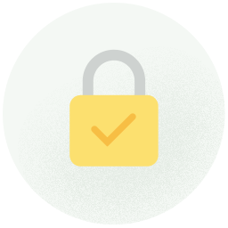

Thank you for choosing Whatsapp, Enjoy .
- Speak FreelyWhatsApp - Calling lets you talk to your friends and family, even if they're in another country
-  See for YourselfWhatsApp - lets you check whether the calls you make and messages you send are
end-to-end encrypted